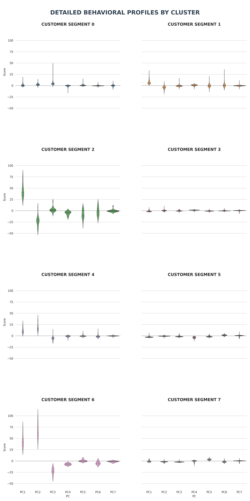
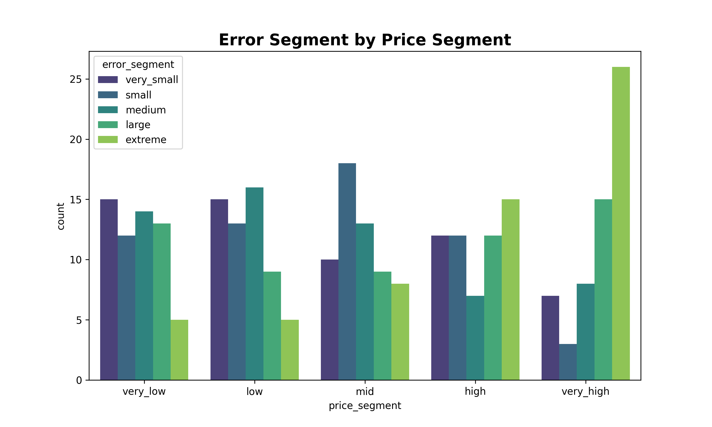

Data Science & Machine Learning Portfolio
I build data-driven models with a focus on feature engineering, interpretability, and decision-relevant insights.
This portfolio highlights selected projects across classification, time series, and unsupervised learning.
Projects
F1 Pit Stop Prediction
Predicting next-lap pit decisions using race telemetry data.
- Focus: performance degradation and lap-time dynamics
- Methods: RandomForest, feature engineering, robust scaling
 Project Overview
Notebook (HTML)
Project Overview
Notebook (HTML)
Credit Card Clustering
Segmenting credit card users based on financial behaviour using PCA and K-Means clustering.
- Focus: spending pattern, credit usage and repayment behaviour.
- Methods: Principal Component Analysis, K-Means Clustering, robust scaling, decomposition.

Project Overview Notebook (HTML)Ames Housing Price Prediction
Predicting house prices in Ames, Iowa, based on multiple features such as number of bedrooms and MSZoning using Linear Regression and Regularization.
- Focus: feature engineering and error behaviour in high value houses
- Methods: Variance Inflation Factors, Linear Regression, robust scaling, Regularization.

Project Overview Notebook (HTML)Upcoming Work
- Retail Demand Forecasting (Time Series)
Stack
Python · Pandas · Scikit-Learn · Matplotlib